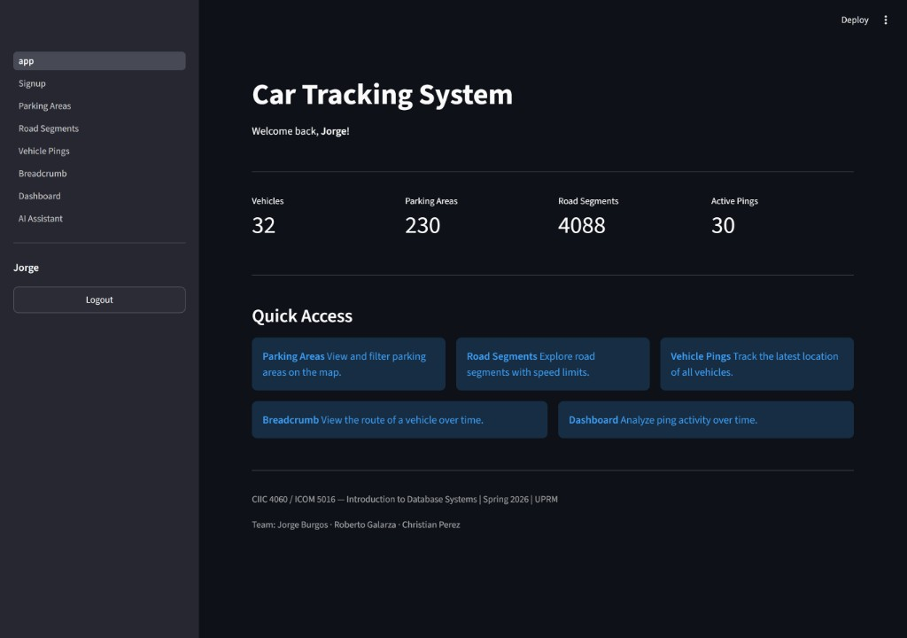
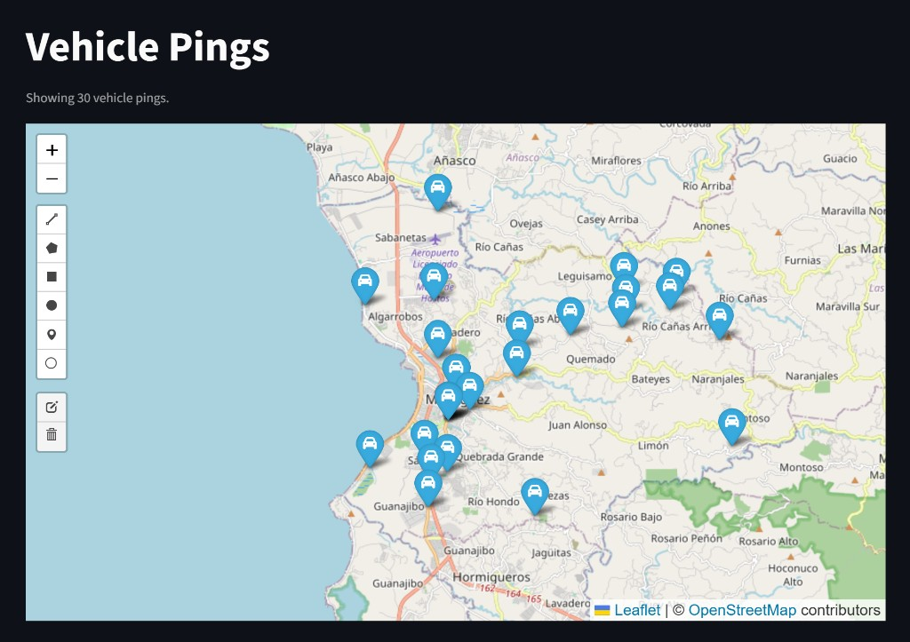
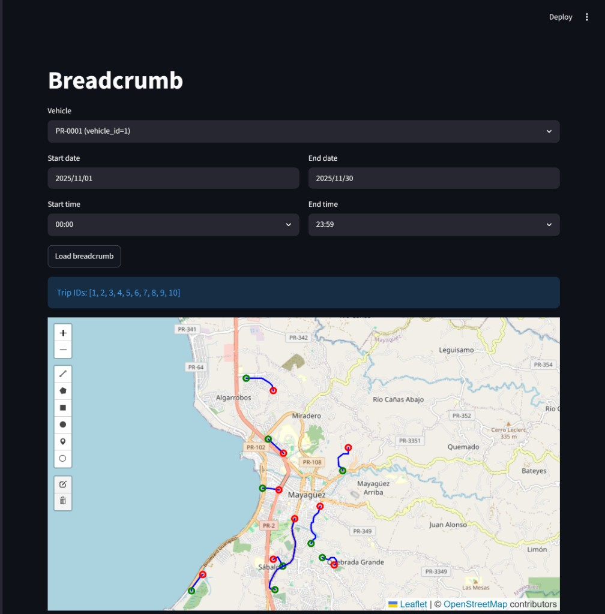
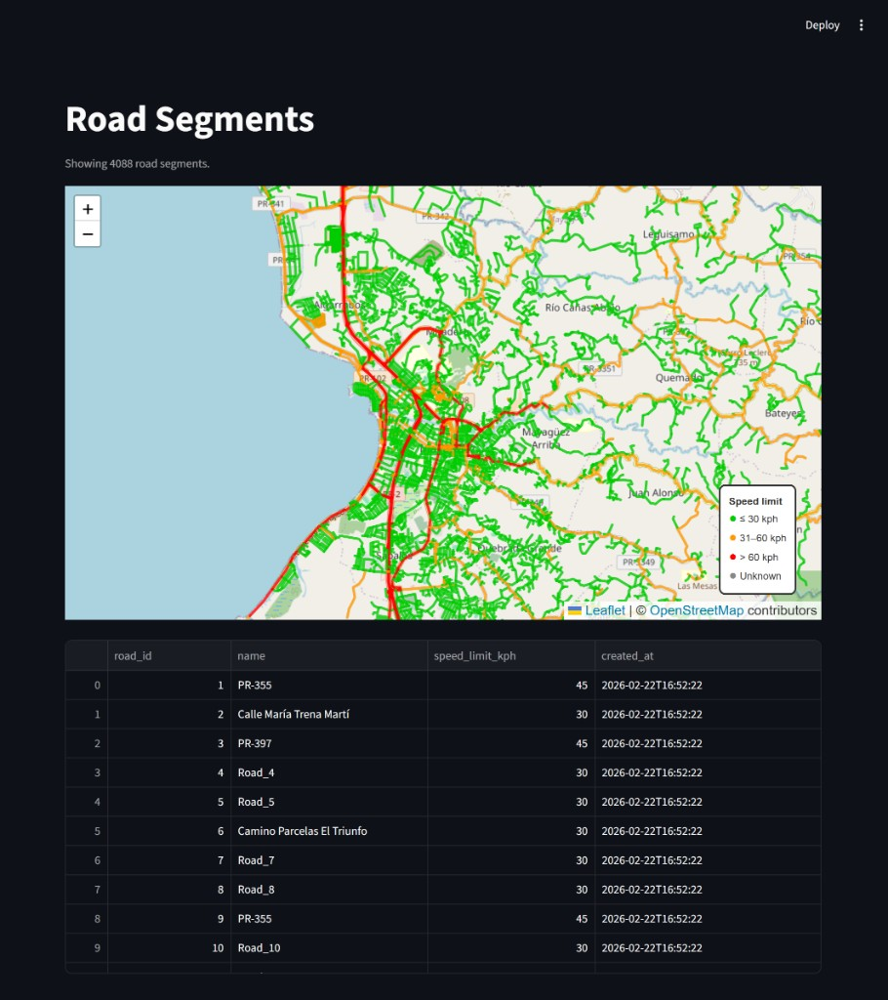
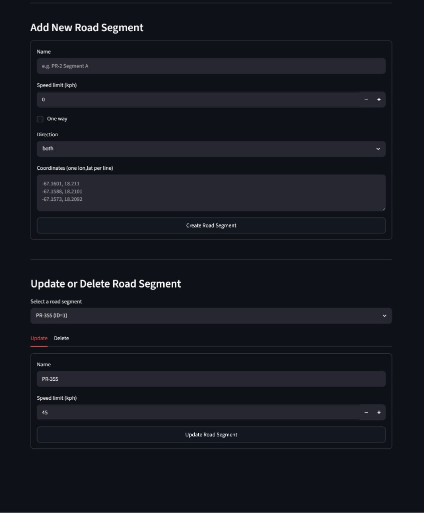
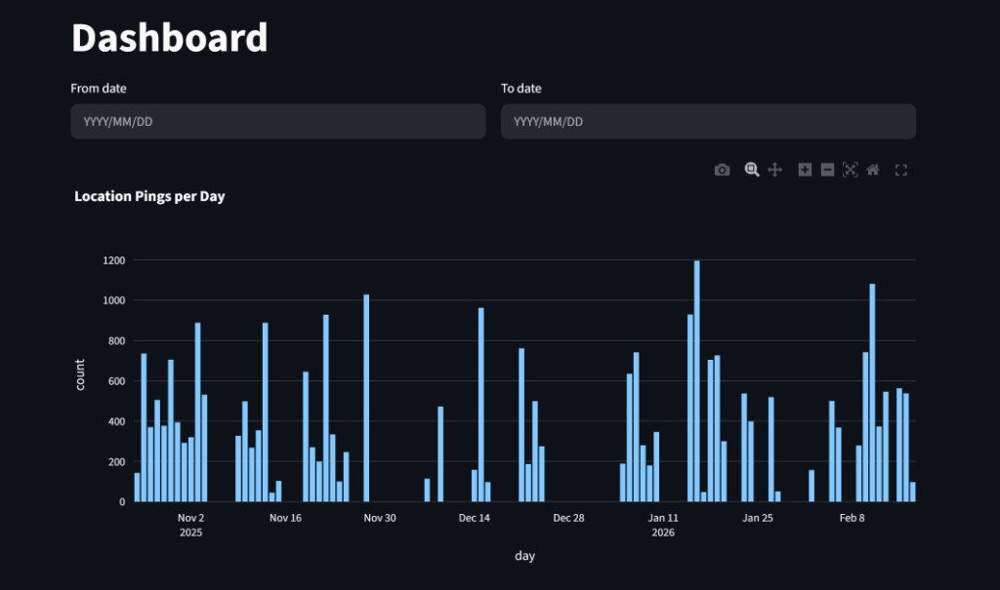
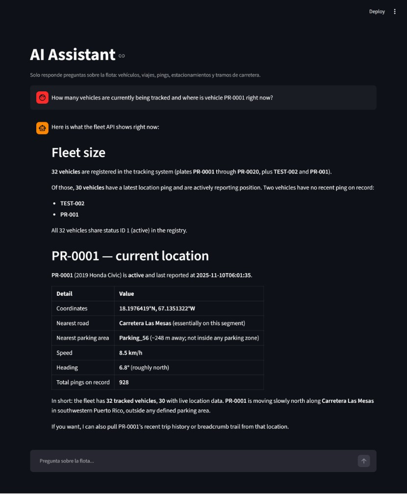
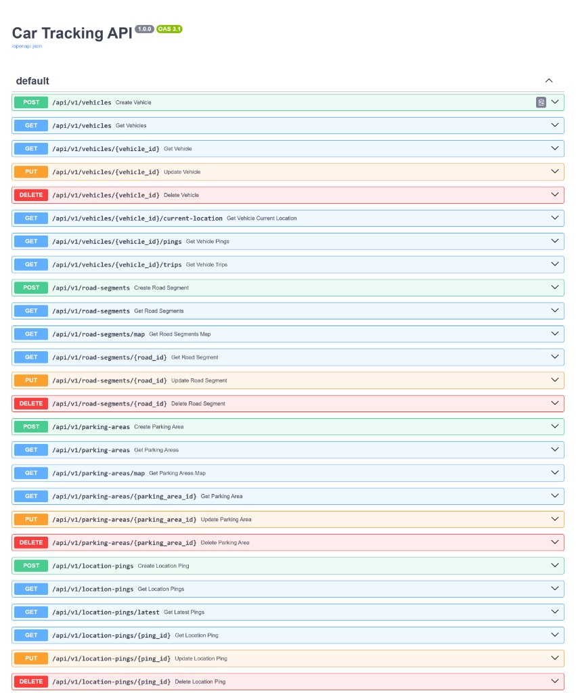

Case study
Car Tracking System
A full-stack geospatial fleet platform that tracks vehicles, trips, GPS pings, road segments, and parking zones — combining a FastAPI REST API, an ETL pipeline into PostgreSQL/PostGIS, a Streamlit web app with live maps and charts, and an in-app AI Assistant.
01 overview
The Car Tracking System is a production-style backend for managing a vehicle fleet. A 28-endpoint RESTful API built with FastAPI exposes CRUD operations and geospatial queries over vehicles, location pings, trips, road segments, and parking areas. It follows a strict Handler/DAO architecture with no ORM, talking to PostgreSQL 17 + PostGIS directly through psycopg2.
An ETL pipeline ingests Parquet datasets into the database, handling geometry conversions (GeoJSON / SRID 4326). On top of the API sits a Streamlit web application with interactive Folium maps, Plotly charts, and an AI Assistant that answers natural-language questions about the fleet using live API data. Everything is containerized with Docker and deployed on Render.
02 tech stack
backend & data
- FastAPI
- PostgreSQL 17
- PostGIS
- psycopg2
- Handler/DAO
web app
- Streamlit
- Folium
- Plotly
- pandas
- requests
etl
- Python
- pandas
- pyarrow
- Parquet
ai assistant
- Cursor SDK
- MCP
- composer-2.5
devops
- Docker
- Docker Compose
- Render
03 how it works
01.The interface
After logging in, users land on the home dashboard: a sidebar to navigate between sections, live counts of vehicles, parking areas, road segments, and active pings, plus quick-access cards into each view.

02.Live fleet map
The Vehicle Pings view renders every vehicle's latest GPS ping on an interactive Folium map, served as GeoJSON from the API. Users can pan, zoom, and filter the fleet across the Mayagüez area.

03.Breadcrumb route
Selecting a vehicle and a time range reconstructs its breadcrumb route — the path built from its location pings, drawn as a PostGIS LineString with start/end markers and the matching trip IDs.

04.Road segments
Over 4,000 road segments are displayed on the map, color-coded by speed
limit, and listed in a paginated data table fed by the
/road-segments endpoints (with GeoJSON for map display).

05.CRUD management
Each entity has full create / update / delete forms wired to the REST API — here, adding a new road segment from coordinates, or editing and deleting an existing one, with validation throughout.

06.Statistics & charts
The dashboard visualizes fleet activity — such as location pings per day
over a selected range — using Plotly charts backed by aggregate queries
from the /stats endpoints.

07.AI Assistant
An in-app chat answers natural-language questions about the fleet (vehicles, trips, pings, parking, statistics). It uses the Cursor SDK with an MCP server exposing the REST API as tools, keeps conversation context, and refuses out-of-scope questions.

08.Interactive API docs
The FastAPI backend auto-generates Swagger/OpenAPI documentation at
/docs, where all 28 endpoints can be explored and tested
interactively.

04 my role
-
Pages Layer (frontend). I built the Streamlit
pages/— the views that consume the REST API: the map dashboard, entity management forms, statistics, and the AI Assistant page. - API integration. Wired the UI to the FastAPI endpoints (auth, CRUD, geospatial and stats queries) with a shared HTTP client and consistent error handling.
- Geospatial visualization. Rendered GeoJSON from the API (points, line strings, polygons) on Folium maps for vehicles, routes, road segments, and parking areas.
- AI Assistant. Built the in-app chat page that answers natural-language questions about the fleet using live API data — integrating the Cursor SDK with an MCP server that exposes the REST endpoints as tools, managing conversation context, and scoping answers to project topics only.